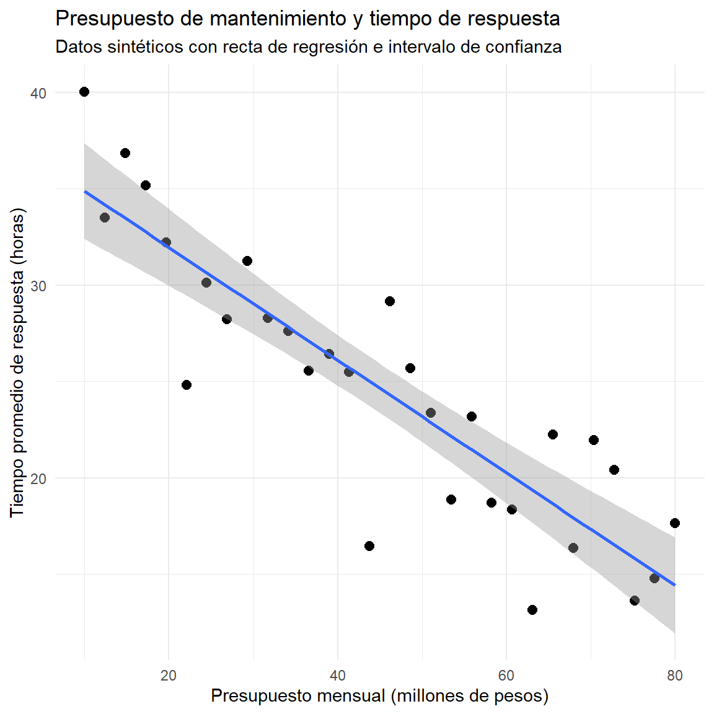
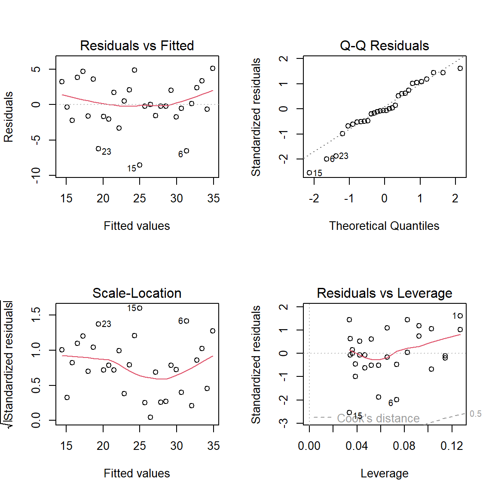
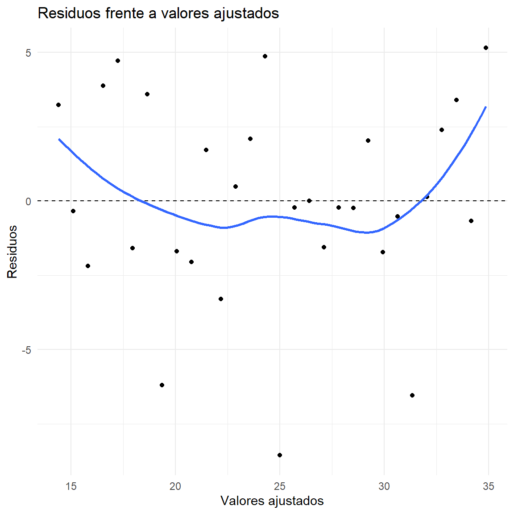
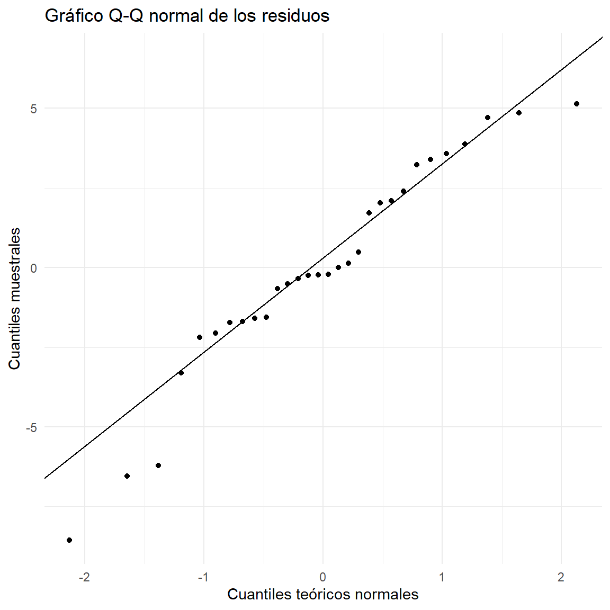
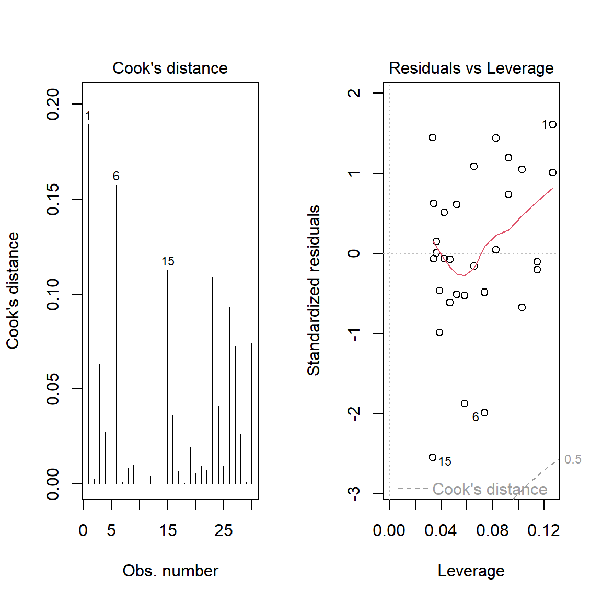

La regresión lineal simple es una técnica estadística que permite estudiar y cuantificar la relación lineal entre dos variables cuantitativas: una variable respuesta o dependiente, denotada por Y, y una variable explicativa o independiente, denotada por X. Además de describir la relación, el modelo permite estimar el valor medio de Y para valores determinados de X y realizar predicciones dentro del rango observado.
La regresión no demuestra por sí sola una relación causal. Para interpretar causalmente sus resultados se requiere un diseño de investigación apropiado, control de factores de confusión y supuestos adicionales.
3 .Objetivos de aprendizaje
Al finalizar el estudio, se espera que el estudiante pueda:
Explicar el modelo de regresión lineal simple y sus componentes.
Estimar los parámetros mediante mínimos cuadrados ordinarios.
Interpretar la pendiente, el intercepto y las medidas de ajuste.
Realizar inferencias sobre los parámetros del modelo.
Evaluar los supuestos mediante diagnósticos gráficos y pruebas estadísticas en R.
Identificar observaciones atípicas e influyentes y comunicar las limitaciones del análisis.
4 .Conceptos fundamentales
Variables del modelo
Variable respuesta (Y): resultado que se desea explicar o predecir.
Variable explicativa (X): variable utilizada para explicar o predecir cambios en la respuesta.
Error aleatorio (\varepsilon): diferencia no explicada por el modelo entre el valor observado y su componente sistemático.
En regresión simple se utiliza una sola variable explicativa. Ambas variables deben ser cuantitativas para la formulación lineal usual.
Modelo poblacional
El modelo de regresión lineal simple se expresa como:
Y_i: valor de la variable respuesta para la observación i.
X_i: valor de la variable explicativa para la observación i.
\beta_0: intercepto poblacional.
\beta_1: pendiente poblacional.
\varepsilon_i: error aleatorio.
n: tamaño de la muestra.
La parte sistemática del modelo es E(Y_i\mid X_i)=\beta_0+\beta_1X_i, cuando el error tiene esperanza condicional cero.
Modelo estimado
A partir de una muestra se estiman los parámetros poblacionales y se obtiene:
\widehat{Y}_i=b_0+b_1X_i.
Aquí, \widehat{Y}_i es el valor ajustado, b_0 es el intercepto estimado y b_1 es la pendiente estimada. El residuo de cada observación es:
e_i=Y_i-\widehat{Y}_i.
Interpretación de los parámetros
Intercepto (b_0). Es el valor estimado de Y cuando X=0. Su interpretación sustantiva solo es pertinente si cero tiene sentido en el contexto y está dentro o cerca del rango de los datos.
Pendiente (b_1). Representa el cambio promedio estimado en Y por cada unidad adicional de X. Si b_1>0, la asociación lineal estimada es positiva; si b_1<0, es negativa; y si b_1=0, no hay pendiente lineal.
5 .Estimación por mínimos cuadrados ordinarios
El método de mínimos cuadrados ordinarios (MCO) selecciona los valores de b_0 y b_1 que minimizan la suma de los cuadrados de los residuos:
Donde \bar X y \bar Y son las medias muestrales. La recta estimada pasa por el punto (\bar X,\bar Y).
Interpretación geométrica
La pendiente determina la inclinación de la recta y el intercepto determina dónde corta el eje vertical. MCO minimiza las distancias verticales al cuadrado entre los valores observados y la recta, no las distancias perpendiculares a ella.
6 .Medidas de variabilidad y bondad de ajuste
La variabilidad total de la respuesta se descompone, en presencia de intercepto, en variabilidad explicada por el modelo y variabilidad residual:
En esta notación, SCT es la suma de cuadrados total, SCR la suma de cuadrados de la regresión y SCE la suma de cuadrados del error o residual.
Coeficiente de determinación
R^2=\frac{SCR}{SCT}=1-\frac{SCE}{SCT}.
El coeficiente R^2 expresa la proporción de la variabilidad muestral de Y explicada por la relación lineal con X. Por ejemplo, R^2=0.64 indica que el 64 % de la variabilidad observada de la respuesta queda explicada por el modelo lineal en la muestra. No significa que el modelo tenga un 64 % de exactitud ni demuestra causalidad.
Error estándar de la regresión
En regresión simple con intercepto, los grados de libertad residuales son n-2. La estimación de la varianza del error es:
s^2=\frac{SCE}{n-2},\qquad s=\sqrt{s^2}.
El error estándar residual, s, mide la dispersión típica de los valores observados alrededor de la recta, en las unidades de Y.
Correlación y regresión
En regresión simple con intercepto, R^2=r_{XY}^2, donde r_{XY} es la correlación de Pearson. El signo de la pendiente coincide con el signo de la correlación. La correlación es una medida simétrica de asociación; la regresión distingue entre respuesta y explicativa y proporciona una ecuación para estimar la respuesta.
7 .Inferencia estadística
La inferencia permite evaluar hipótesis sobre los parámetros y construir intervalos de confianza, bajo las condiciones del modelo.
Prueba de hipótesis para la pendiente
Una pregunta frecuente es si existe evidencia de una asociación lineal entre X y la media condicional de Y. Se plantea:
H_0:\beta_1=0,\qquad H_1:\beta_1\ne 0.
El estadístico de prueba es:
t=\frac{b_1-0}{SE(b_1)},\qquad gl=n-2,
con
SE(b_1)=\frac{s}{\sqrt{\sum(X_i-\bar X)^2}}.
Para una prueba bilateral, se rechaza H_0 si el valor p es menor que el nivel de significancia \alpha, por ejemplo 0.05. Un valor p pequeño aporta evidencia contra la hipótesis nula; no mide el tamaño ni la importancia práctica del efecto.
Intervalo de confianza para la pendiente
b_1\pm t_{1-\alpha/2,\,n-2}SE(b_1).
Un intervalo que no contiene cero corresponde a una prueba bilateral significativa al nivel \alpha, siempre que se utilicen los mismos supuestos y método.
Prueba F global
En regresión lineal simple, la prueba F de significancia global contrasta H_0:\beta_1=0. El estadístico es:
F=\frac{SCR/1}{SCE/(n-2)}.
En este modelo, la prueba F es equivalente a la prueba t bilateral para la pendiente: F=t^2. En R, summary(modelo) presenta ambas pruebas.
Intervalos de confianza y predicción
Para un valor x_0, el intervalo de confianza estima la media condicional E(Y\mid X=x_0). El intervalo de predicción estima un valor individual futuro de Y para ese valor de X, por lo que suele ser más amplio porque incorpora tanto la incertidumbre de la media estimada como la variabilidad individual.
El código de predicción se ejecutará en el ejemplo aplicado, después de ajustar el modelo con lm(). Esto garantiza que el objeto modelo exista antes de llamar a predict().
8 .Supuestos del modelo y su validación
La calidad de una regresión no debe juzgarse únicamente por el valor de R^2 o por la significancia de la pendiente. Es necesario examinar si la forma funcional y el comportamiento de los errores son razonables.
El modelo clásico suele formular los siguientes supuestos:
Linealidad en la media condicional
Se supone que la media de Y, condicionada a X, sigue una función lineal:
E(Y_i\mid X_i)=\beta_0+\beta_1X_i.
Diagnóstico: gráfico de residuos frente a valores ajustados y gráfico de residuos frente a X. Se espera una nube sin patrones sistemáticos alrededor de cero. Curvaturas o patrones persistentes pueden indicar que la relación no es lineal.
Alternativas: revisar errores de medición y variables omitidas; considerar una transformación o un término polinómico si tiene justificación sustantiva. No debe añadirse complejidad solo para mejorar una prueba.
Independencia de los errores
Se requiere que los errores de distintas observaciones no presenten dependencia, condición especialmente importante en datos ordenados en el tiempo, espaciales o agrupados.
Diagnóstico: examinar residuos según el orden de observación y el diseño de muestreo. La prueba de Durbin-Watson evalúa autocorrelación de primer orden en contextos apropiados.
Precaución: Durbin-Watson no es una prueba universal de independencia. En datos transversales, la independencia debe justificarse principalmente por el diseño y el proceso de muestreo. Si hay medidas repetidas o agrupamientos, puede requerirse un modelo multinivel, errores estándar agrupados o modelos de correlación.
Homocedasticidad
La varianza condicional del error debe ser constante:
Var(\varepsilon_i\mid X_i)=\sigma^2.
Diagnóstico gráfico: residuos frente a valores ajustados. Una dispersión aproximadamente constante es compatible con homocedasticidad; una forma de embudo sugiere heterocedasticidad.
Prueba de Breusch-Pagan: contrasta una hipótesis nula de varianza constante frente a una alternativa en la que la varianza depende de variables explicativas. Un valor p pequeño aporta evidencia de heterocedasticidad.
Alternativas: errores estándar robustos a heterocedasticidad (por ejemplo, HC3), transformación de la respuesta cuando sea defendible o modelación explícita de la varianza. Los errores robustos modifican la inferencia, pero no corrigen una forma funcional incorrecta.
Normalidad de los errores
Para la inferencia t y F exacta en muestras pequeñas bajo el modelo clásico, se suele asumir:
\varepsilon_i\mid X_i\sim N(0,\sigma^2).
La normalidad se refiere a los errores no observables; en la práctica se examinan los residuos como aproximación.
Diagnóstico gráfico: histograma y gráfico Q-Q normal de los residuos. En el Q-Q, los puntos deberían aproximarse a una línea recta, sin desviaciones sistemáticas importantes.
Prueba de Shapiro-Wilk: contrasta normalidad. Un valor p pequeño sugiere desviaciones respecto a la normalidad. La prueba es sensible al tamaño muestral: con muestras grandes puede detectar desviaciones pequeñas y con muestras pequeñas puede tener poca potencia.
La falta de normalidad no implica automáticamente que la pendiente MCO esté sesgada. Puede afectar la inferencia exacta en muestras pequeñas; también deben revisarse valores atípicos, asimetría y especificación del modelo.
Observaciones atípicas e influyentes
Una observación atípica presenta un residuo inusualmente grande. Una observación de alto apalancamiento tiene un valor de X alejado del centro de los datos. Una observación influyente es aquella cuya eliminación cambia sustancialmente el ajuste o las estimaciones.
Herramientas habituales:
Residuos studentizados: ayudan a identificar respuestas inusuales dado el modelo.
Apalancamiento (leverage): mide qué tan extrema es una observación en el espacio de las variables explicativas.
Distancia de Cook: resume la influencia de una observación sobre el ajuste.
Las reglas orientativas, como |r_i|>2, leverage mayor que 2p/n o Cook mayor que 4/n, son señales para investigar, no criterios automáticos para eliminar datos. En regresión simple con intercepto, p=2 parámetros estimados. Toda decisión debe justificarse con el contexto y, de ser útil, un análisis de sensibilidad.
Exogeneidad y especificación
Una condición central para interpretar MCO como estimador insesgado es que:
E(\varepsilon_i\mid X_i)=0.
Esto implica que la variable explicativa no está sistemáticamente relacionada con factores no observados incluidos en el error. Puede fallar por variables omitidas, simultaneidad, errores de medición o selección. No existe una prueba gráfica sencilla que garantice este supuesto; se fundamenta con teoría, diseño y conocimiento del proceso de generación de datos.
¿Existe el supuesto de multicolinealidad en regresión simple?
La multicolinealidad se refiere a relaciones lineales entre dos o más variables explicativas. En una regresión lineal simple hay una sola variable explicativa, por lo que no existe multicolinealidad entre predictores. Sí es necesario que X tenga variabilidad; si todos los valores de X son iguales, la pendiente no puede estimarse.
9 .Ejemplo aplicado
Una entidad pública desea estudiar si el presupuesto mensual destinado al mantenimiento preventivo de la infraestructura (en millones de pesos) está asociado con el tiempo promedio de respuesta ante solicitudes de mantenimiento (en horas). Para el ejemplo didáctico se construye una base sintética de 30 dependencias. Los datos son simulados y no representan registros reales de una entidad.
X: presupuesto mensual de mantenimiento, en millones de pesos.
Y: tiempo promedio de respuesta, en horas.
La pregunta es: ¿cómo cambia el tiempo promedio de respuesta asociado con un incremento de una unidad en el presupuesto mensual? La asociación observada no debe interpretarse automáticamente como efecto causal.
Preparación de los datos
Ver código
# Instalar una sola vez si es necesario:# install.packages(c("ggplot2", "lmtest", "sandwich", "car"))library(ggplot2)library(lmtest)library(sandwich)library(car)set.seed(2026)n <-30presupuesto <-seq(10, 80, length.out = n)error <-rnorm(n, mean =0, sd =3.5)tiempo_respuesta <-42-0.38* presupuesto + errordatos <-data.frame(presupuesto, tiempo_respuesta)head(datos)
presupuesto tiempo_respuesta
Min. :10.0 Min. :13.15
1st Qu.:27.5 1st Qu.:18.75
Median :45.0 Median :25.15
Mean :45.0 Mean :24.65
3rd Qu.:62.5 3rd Qu.:28.94
Max. :80.0 Max. :40.02
Análisis descriptivo y gráfico de dispersión
Ver código
summary(datos$presupuesto)
Min. 1st Qu. Median Mean 3rd Qu. Max.
10.0 27.5 45.0 45.0 62.5 80.0
Ver código
summary(datos$tiempo_respuesta)
Min. 1st Qu. Median Mean 3rd Qu. Max.
13.15 18.75 25.15 24.65 28.94 40.02
Ver código
sd(datos$presupuesto)
[1] 21.24961
Ver código
sd(datos$tiempo_respuesta)
[1] 7.057916
Ver código
cor(datos$presupuesto, datos$tiempo_respuesta)
[1] -0.8800703
Ver código
ggplot(datos, aes(x = presupuesto, y = tiempo_respuesta)) +geom_point(size =2.5) +geom_smooth(method ="lm", se =TRUE) +labs(title ="Presupuesto de mantenimiento y tiempo de respuesta",subtitle ="Datos sintéticos con recta de regresión e intervalo de confianza",x ="Presupuesto mensual (millones de pesos)",y ="Tiempo promedio de respuesta (horas)" ) +theme_minimal()

El gráfico permite observar la dirección, la forma aproximada y la dispersión de la relación. Antes de ajustar el modelo, conviene verificar que no haya errores de digitación ni observaciones que requieran investigación.
Estimación del modelo
Ver código
modelo <-lm(tiempo_respuesta ~ presupuesto, data = datos)# Coeficientes estimadoscoef(modelo)
(Intercept) presupuesto
37.8004295 -0.2923095
Ver código
# Resumen completo: errores estándar, pruebas t, R cuadrado y prueba Fsummary(modelo)
Call:
lm(formula = tiempo_respuesta ~ presupuesto, data = datos)
Residuals:
Min 1Q Median 3Q Max
-8.5548 -1.6712 -0.2211 2.3166 5.1447
Coefficients:
Estimate Std. Error t value Pr(>|t|)
(Intercept) 37.80043 1.47876 25.562 < 2e-16 ***
presupuesto -0.29231 0.02981 -9.807 1.48e-10 ***
---
Signif. codes: 0 '***' 0.001 '**' 0.01 '*' 0.05 '.' 0.1 ' ' 1
Residual standard error: 3.411 on 28 degrees of freedom
Multiple R-squared: 0.7745, Adjusted R-squared: 0.7665
F-statistic: 96.18 on 1 and 28 DF, p-value: 1.477e-10
Ver código
# Intervalos de confianza para los coeficientesconfint(modelo, level =0.95)
# Predicción para una dependencia con presupuesto de 50 millonesnuevo_caso <-data.frame(presupuesto =50)# Intervalo de confianza para el tiempo promedio esperadopredict(modelo, newdata = nuevo_caso,interval ="confidence", level =0.95)
fit lwr upr
1 23.18495 21.87337 24.49654
Ver código
# Intervalo de predicción para el tiempo de una dependencia individualpredict(modelo, newdata = nuevo_caso,interval ="prediction", level =0.95)
fit lwr upr
1 23.18495 16.07635 30.29356
La ecuación estimada tiene la forma:
\widehat{Y}=b_0+b_1X.
Interprete el intercepto como el tiempo estimado cuando el presupuesto es cero, únicamente si ese valor tiene sentido contextual. La pendiente indica el cambio promedio estimado en horas asociado con un aumento de un millón de pesos en el presupuesto mensual. El signo y la magnitud deben interpretarse junto con su intervalo de confianza y el rango observado de presupuestos.
Validación gráfica de los supuestos
La función plot() aplicada a un objeto lm produce cuatro gráficos diagnósticos clásicos.
Ver código
par(mfrow =c(2, 2))plot(modelo)

Ver código
par(mfrow =c(1, 1))
Interpretación de los paneles:
Residuals vs Fitted: busca patrones o curvaturas y cambios en la dispersión. Una nube sin estructura es deseable.
Normal Q-Q: evalúa si los residuos se aproximan a una distribución normal.
Scale-Location: examina si la dispersión de los residuos estandarizados es aproximadamente constante.
Residuals vs Leverage: ayuda a detectar observaciones con alto apalancamiento e influencia; las curvas de Cook orientan la revisión.
Gráfico específico de residuos frente a valores ajustados
Ver código
diagnosticos <-data.frame(ajustados =fitted(modelo),residuos =resid(modelo),residuos_estandarizados =rstandard(modelo))ggplot(diagnosticos, aes(x = ajustados, y = residuos)) +geom_point() +geom_hline(yintercept =0, linetype ="dashed") +geom_smooth(method ="loess", se =FALSE) +labs(title ="Residuos frente a valores ajustados",x ="Valores ajustados",y ="Residuos" ) +theme_minimal()

Se espera que los residuos se distribuyan alrededor de cero sin una curva definida y con amplitud aproximadamente constante.
Gráfico Q-Q normal
Ver código
ggplot(diagnosticos, aes(sample = residuos)) +stat_qq() +stat_qq_line() +labs(title ="Gráfico Q-Q normal de los residuos",x ="Cuantiles teóricos normales",y ="Cuantiles muestrales" ) +theme_minimal()

Una alineación aproximada con la recta es compatible con normalidad razonable. Desviaciones en las colas pueden indicar colas pesadas, asimetría o valores atípicos.
Pruebas estadísticas para los supuestos
A. Normalidad: Shapiro-Wilk
Hipótesis:
H_0:\text{los errores siguen una distribución normal}
H_1:\text{los errores no siguen una distribución normal}
Shapiro-Wilk normality test
data: residuals(modelo)
W = 0.94679, p-value = 0.1387
Con \alpha=0.05: si el valor p es menor que 0.05, se rechaza la hipótesis nula y se encuentra evidencia de desviación respecto a la normalidad. Si es mayor o igual que 0.05, no se rechaza la hipótesis nula; esto no demuestra que los errores sean normales. Complementar siempre con el Q-Q plot y la revisión de observaciones atípicas.
B. Homocedasticidad: Breusch-Pagan
Hipótesis:
H_0:\operatorname{Var}(\varepsilon_i\mid X_i)=\sigma^2
H_1:\operatorname{Var}(\varepsilon_i\mid X_i)\text{ no es constante}
Ver código
prueba_bp <-bptest(modelo)prueba_bp
studentized Breusch-Pagan test
data: modelo
BP = 0.0042373, df = 1, p-value = 0.9481
Con \alpha=0.05, un valor p menor que 0.05 indica evidencia de heterocedasticidad. Un valor p mayor o igual que 0.05 significa que no se encontró evidencia suficiente para rechazar la homocedasticidad; no prueba que la varianza sea constante.
Si se detecta heterocedasticidad, se pueden calcular errores estándar robustos:
Ver código
coeftest(modelo, vcov. =vcovHC(modelo, type ="HC3"))
t test of coefficients:
Estimate Std. Error t value Pr(>|t|)
(Intercept) 37.800430 1.549041 24.4025 < 2.2e-16 ***
presupuesto -0.292310 0.031352 -9.3235 4.414e-10 ***
---
Signif. codes: 0 '***' 0.001 '**' 0.01 '*' 0.05 '.' 0.1 ' ' 1
Los coeficientes MCO permanecen iguales; cambian los errores estándar, estadísticos y valores p utilizados para la inferencia robusta.
C. Independencia: Durbin-Watson
Hipótesis usuales de la prueba:
H_0:\rho=0 \quad\text{(sin autocorrelación de primer orden)}
H_1:\rho\ne 0 \quad\text{(autocorrelación de primer orden)}
Ver código
prueba_dw <-dwtest(modelo)prueba_dw
Durbin-Watson test
data: modelo
DW = 2.1864, p-value = 0.6245
alternative hypothesis: true autocorrelation is greater than 0
Esta prueba tiene sentido cuando el orden de las observaciones es sustantivo, por ejemplo, una serie temporal. En este ejemplo didáctico las observaciones son dependencias y no una secuencia temporal; por tanto, no se debe interpretar Durbin-Watson como una validación concluyente de independencia. La independencia debe justificarse a partir del diseño de recolección y de la estructura de los datos.
D. Linealidad
No existe una única prueba que certifique la linealidad. Se evalúa principalmente mediante el gráfico de dispersión y los residuos frente a los valores ajustados. Como herramienta complementaria, puede compararse el modelo lineal con uno que incluya un término cuadrático, siempre que exista justificación:
Analysis of Variance Table
Model 1: tiempo_respuesta ~ presupuesto
Model 2: tiempo_respuesta ~ presupuesto + I(presupuesto^2)
Res.Df RSS Df Sum of Sq F Pr(>F)
1 28 325.73
2 27 293.24 1 32.489 2.9915 0.09512 .
---
Signif. codes: 0 '***' 0.001 '**' 0.01 '*' 0.05 '.' 0.1 ' ' 1
Un valor p pequeño en la comparación sugiere que el término cuadrático mejora el ajuste respecto al modelo lineal, pero no debe tomarse como decisión automática: también se consideran gráficos, teoría y validación fuera de muestra.
Detección de observaciones atípicas e influyentes
Ver código
# Residuos studentizadosres_student <-rstudent(modelo)# Apalancamientoapalancamiento <-hatvalues(modelo)# Distancia de Cookcook <-cooks.distance(modelo)# Tabla de diagnóstico por observacióntabla_diagnostico <-data.frame(observacion =seq_len(nrow(datos)),presupuesto = datos$presupuesto,tiempo_respuesta = datos$tiempo_respuesta,residuo_studentizado = res_student,leverage = apalancamiento,cook = cook)head(tabla_diagnostico[order(-tabla_diagnostico$cook), ], 10)
# Gráficos de influenciapar(mfrow =c(1, 2))plot(modelo, which =4) # Distancia de Cookplot(modelo, which =5) # Leverage y residuos studentizados

Ver código
par(mfrow =c(1, 1))
Las observaciones señaladas deben revisarse en la fuente original. No se deben eliminar automáticamente: pueden ser errores, casos válidos pero inusuales o evidencia de que el modelo no representa adecuadamente todos los casos. Es recomendable comparar los resultados con y sin observaciones influyentes, explicando la razón de cualquier exclusión.
Resumen automatizado de diagnósticos
El siguiente código organiza los resultados de las pruebas utilizadas. Los resultados deben interpretarse junto con los gráficos y el diseño del estudio.
Ver código
alpha <-0.05p_shapiro <- prueba_shapiro$p.valuep_bp <- prueba_bp$p.valueresumen_pruebas <-data.frame(Supuesto =c("Normalidad de residuos", "Homocedasticidad"),Prueba =c("Shapiro-Wilk", "Breusch-Pagan"),Valor_p =c(p_shapiro, p_bp),Decision =c(ifelse(p_shapiro < alpha,"Evidencia de desviación de normalidad","No se rechaza normalidad"),ifelse(p_bp < alpha,"Evidencia de heterocedasticidad","No se rechaza homocedasticidad") ))resumen_pruebas
Supuesto Prueba Valor_p
Normalidad de residuos Shapiro-Wilk 0.1386523
BP Homocedasticidad Breusch-Pagan 0.9480985
Decision
No se rechaza normalidad
BP No se rechaza homocedasticidad
No se incluye una decisión automática sobre independencia o linealidad porque estas requieren considerar el diseño, el orden de observación y los gráficos correspondientes.
Predicción
Ver código
nuevo_caso <-data.frame(presupuesto =c(30, 50, 70))# Estimación de la media condicionalpredict(modelo, newdata = nuevo_caso,interval ="confidence", level =0.95)
Las predicciones deben realizarse preferiblemente dentro del rango de presupuestos observado (10 a 80 millones en esta simulación). Predecir fuera de ese rango es extrapolar y puede ser poco confiable.
¿Qué hacer cuando no se cumplen los supuestos?
Hallazgo
Posibles acciones
No linealidad
Revisar la teoría, explorar transformaciones o términos no lineales y comparar diagnósticos.
Heterocedasticidad
Usar errores estándar robustos, revisar transformaciones o modelar la varianza.
Residuos no normales
Revisar valores atípicos y especificación; considerar inferencia robusta o métodos alternativos según el tamaño muestral y el objetivo.
Dependencia
Modelar la estructura temporal, espacial o por grupos; considerar errores estándar o modelos que contemplen esa dependencia.
Observaciones influyentes
Verificar datos, justificar su tratamiento y realizar análisis de sensibilidad.
Endogeneidad o variables omitidas
Revisar el diseño, incorporar variables relevantes o considerar estrategias de identificación causal apropiadas.
Ninguna transformación o prueba aislada garantiza que el modelo sea correcto. La decisión debe integrar el contexto, el diseño de investigación, la evidencia gráfica y el propósito del análisis.
Lista de verificación para reportar una regresión
Antes de presentar resultados, compruebe que el informe incluya:
Definición operacional de las variables, unidades y fuente de datos.
Justificación teórica de la relación propuesta y del modelo lineal.
Tamaño de muestra, descripción de datos y gráfico de dispersión.
Ecuación estimada, coeficientes, errores estándar e intervalos de confianza.
Estadístico de prueba, grados de libertad y valor p para la pendiente.
R^2, error estándar residual y una interpretación contextual, sin exagerar su alcance.
Diagnósticos de linealidad, independencia, homocedasticidad, normalidad y observaciones influyentes.
Métodos alternativos o ajustes utilizados cuando corresponda.
Limitaciones, especialmente las relacionadas con causalidad y extrapolación.
10 .Ejercicio propuesto
Una alcaldía desea analizar la relación entre el gasto mensual en capacitación de funcionarios (en millones de pesos) y el número de trámites procesados correctamente por mes en distintas dependencias.
Identifique la variable respuesta y la variable explicativa.
Formule el modelo poblacional de regresión lineal simple.
Estime el modelo y escriba la ecuación de regresión.
Interprete el intercepto y la pendiente en el contexto del problema.
Contraste H_0:\beta_1=0 frente a H_1:\beta_1\ne0, con \alpha=0.05.
Interprete el coeficiente de determinación.
Valide linealidad, normalidad, homocedasticidad e influencia mediante gráficos y pruebas apropiadas.
Explique cómo procedería si se detecta heterocedasticidad.
Estime la respuesta media y prediga una observación individual para un gasto elegido dentro del rango muestral.
Redacte una conclusión que distinga asociación estadística de causalidad.
11 .Conclusiones
La regresión lineal simple permite resumir y cuantificar una asociación lineal entre dos variables cuantitativas. Su interpretación exige analizar los coeficientes en sus unidades originales, valorar la incertidumbre y revisar la capacidad explicativa del modelo. La validación de supuestos es una parte esencial del análisis: los gráficos y las pruebas estadísticas ofrecen evidencia diagnóstica, pero ninguna prueba aislada certifica que el modelo sea adecuado. Finalmente, una asociación estadística no demuestra causalidad y las predicciones fuera del rango observado requieren especial cautela.
12 .Referencias bibliográficas
Fox, J. (2016). Applied Regression Analysis and Generalized Linear Models (3rd ed.). SAGE Publications.
James, G., Witten, D., Hastie, T., Tibshirani, R., & Taylor, J. (2023). An Introduction to Statistical Learning: with Applications in R (2nd ed.). Springer. https://www.statlearning.com/
Montgomery, D. C., Peck, E. A., & Vining, G. G. (2021). Introduction to Linear Regression Analysis (6th ed.). Wiley.
R Core Team. (2026). R: A Language and Environment for Statistical Computing. R Foundation for Statistical Computing. https://www.r-project.org/